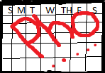

Inside The Playbook
Coaching Staffs
This Pho Bowl Rice Noodle Soup system is run on beef broth flavor surrounded by great ingredients:
- Beef Marrow Bones
- Onions
- Gingers
- Instant Beef Broth Powder
- Star Anise Pods
- Fish Sauce
- Fennel and Coriander Seeds
There is so many schemes to go about it in this all around season. The most effective one is during a cold winter. So good that it warms the body and refreshing as just a WIN!
I will never get tired of it!
Depth Chart(Condiments)
- Beef Sirloins(lean)
- Cilantro
- Culantro
- Basil
- Hoisin Sauce
- Lime Wedge
- Meatballs
- Red Chilli Oil
- Sriracha Sauce
Click here to Supersize My Pho
{kind=link}
Schedule
The title says it all!! (Eat Pho All Day) The main days will usually be Fri-Sundays when there is a family gathering event or even better during NFL Viking games.
The Taste Test
I will always taste the broth first before serving it to others and also before adding condiment sauces into my bowl since I like it to be very spicy. By tasting the broth, I will know if it needs to add more ingredients so the broth will not be too bland or salty.